Git & GitHub
Module Learning Objectives
By the end of this module, you will be able to:
- Describe the difference between Git and GitHub
- Navigate GitHub via a web browser
- Use GitHub to create a new repository
- Edit a new repository through GitHub’s interface
Version Control Background
Version control systems (including Git) are built to preserve the iterative versions that we create on the way to a final product. For instance, when writing a scientific manuscript we might have several discrete stages (e.g., separate drafts after successive rounds of feedback from collaborators) as well as the sort of small-scale changes we don’t necessarily preserve in separate files (e.g., workshopping a particular sentence for rhetorical flow).
Version control systems provide a framework for preserving these changes without cluttering your computer with all of the files that precede the final version.

Git-Specific Background
Git can be enabled on a specific folder/directory on your file system to version files within that directory (including sub-directories). In Git (and other version control systems) terms, this “tracked folder” is called a repository (which formally is a specific data structure storing versioning information).
Although there many ways to start a new repository, GitHub (or any other cloud solutions, such as GitLab) provide among the most convenient way of starting a repository.
Let’s distinguish between Git and GitHub:
- Git: version control software used to track files in a folder (a repository)
- Git creates the versioned history of a repository
- GitHub: website that allows users to store their Git repositories and share them with others (i.e. a graphical user interface or “GUI”)
GitHub is a company that hosts Git repositories online and provides several collaboration features. GitHub fosters a great user community and has built a nice web interface to Git, also adding great visualization/rendering capacities of your data.
- GitHub.com: github.com
- A user account: github.com/angelchen7
- An organization account: github.com/lter
Exploring GitHub
Let’s navigate over to GitHub and explore some of its features. Here is what the home screen looks like as of February 2022.
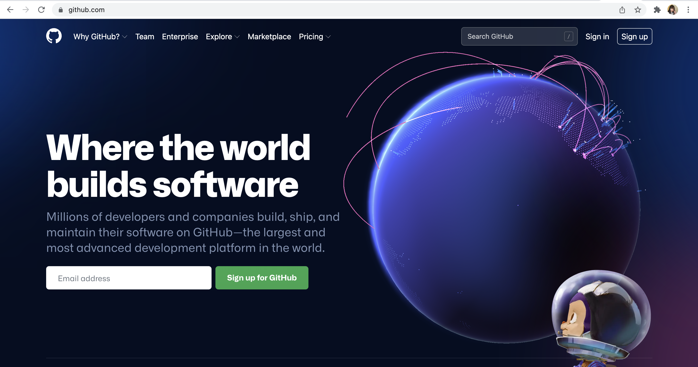
Log in with your GitHub account that you should have created prior to this workshop.
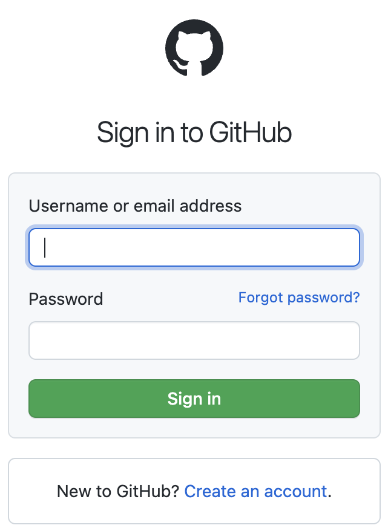
Once you’ve logged in, you should see something like this:
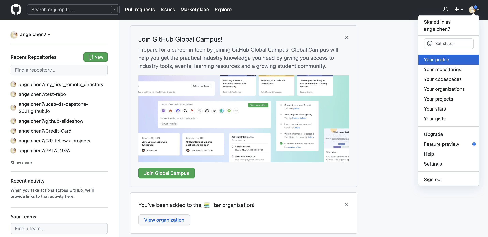
This landing page has a nice summary of your recent repositories and activity on the left panel. Click on your icon at the top left corner and navigate to your profile.
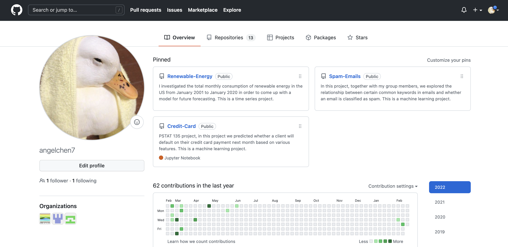
Your profile page shows the organizations that you’re a part of, as well as a more detailed view of your GitHub contributions/activities over time. There are also tabs at the top that lead you to your repositories, projects, packages, and starred repositories. If you would like, you can change your GitHub theme to dark mode by clicking on your icon at the top left corner and going to Settings then Appearances. For the purposes of this workshop, the rest of the screenshots for the GitHub website will be in dark mode to differentiate it from RStudio.
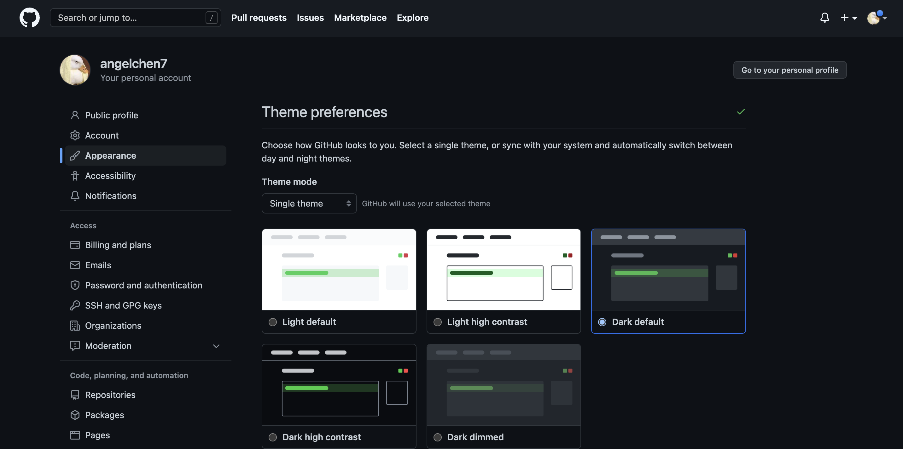
If there is anything else you would like to change about your account, the user settings page should have it.
Looking at a GitHub Repository
To check the repositories that you’ve created, click on the Repositories tab. Note that the top left corner has a green button that will allow you to create new repositories. We will come back to that later. Let’s take a closer look at what the ucsb-ds-capstone-2021.github.io repository contains.
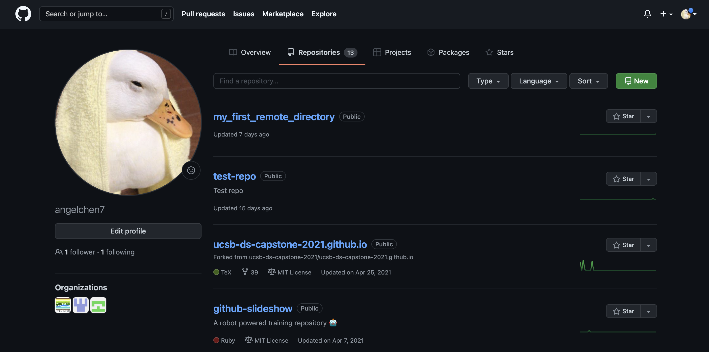
This screen shows the copy of a repository stored on GitHub, with its list of files, when the files and directories were last modified, and some information on who made the most recent changes.
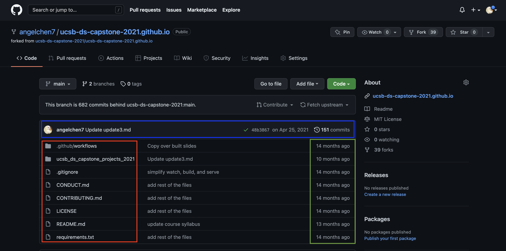
If we look at the blue rectangle, we can see that there have been 151 commits made to this repository. By clicking on them, we can see the history of changes made to all of the files. Looks like 3 users were making changes in April.
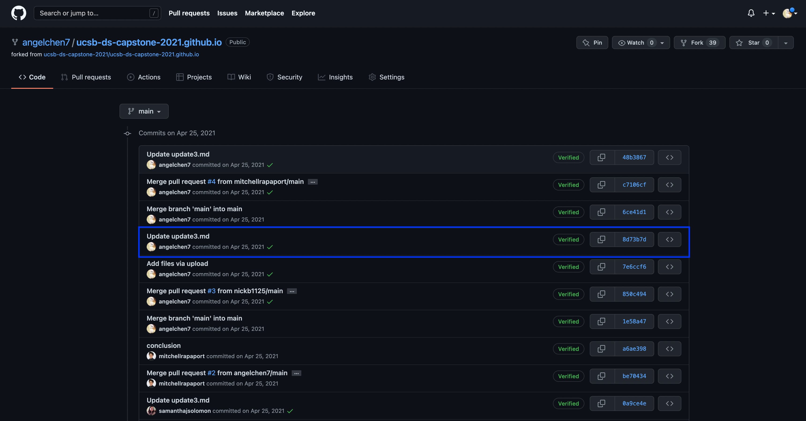
And finally, if we examine one of the changes made on April 25, we can see exactly what was changed in each file:
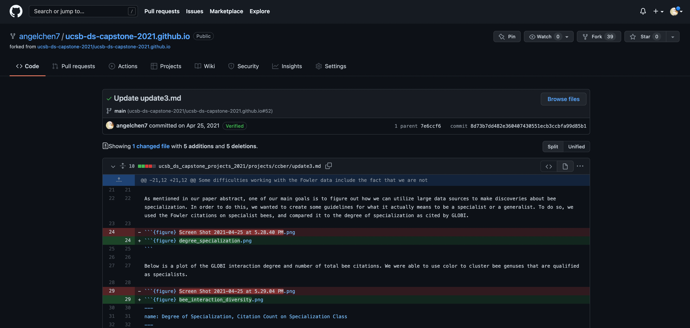
The red lines have been deleted while the green lines are new additions. Tracking these changes, and seeing how they relate to released versions of software and files is exactly what Git and GitHub are good for. We will show how they can really be effective for tracking versions of scientific code, figures, and manuscripts to accomplish a reproducible workflow.
Note: it is possible to edit and add files entirely on the GitHub website, by navigating to the specific file or repository. However, for this workshop, we will be editing and adding files through RStudio instead.

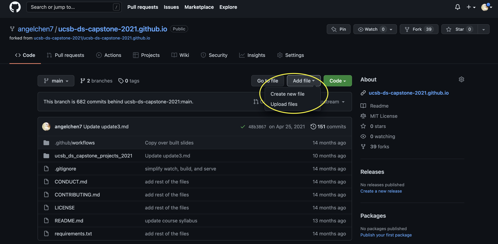
Creating a Repository on GitHub
To stimulate a collaborative GitHub/RStudio workflow, we are going to have 1 person from each group create a new repository on their GitHub account. This will be the repository where everyone shares their files and code.
To create a new repository, follow these steps:
- Navigate to your profile page and click on the Repositories tab.
- Click on New.
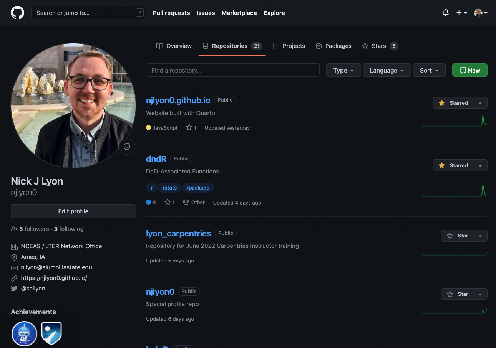
Enter a descriptive name for your new repository, here we named it
git-practice(avoid upper case and use-or_instead of spaces).Write a 1-sentence description about the repository content.
Choose Public (as of January 2019, GitHub now offers unlimited free private repositories with a maximum of 3 collaborators).
Check Add a README file.
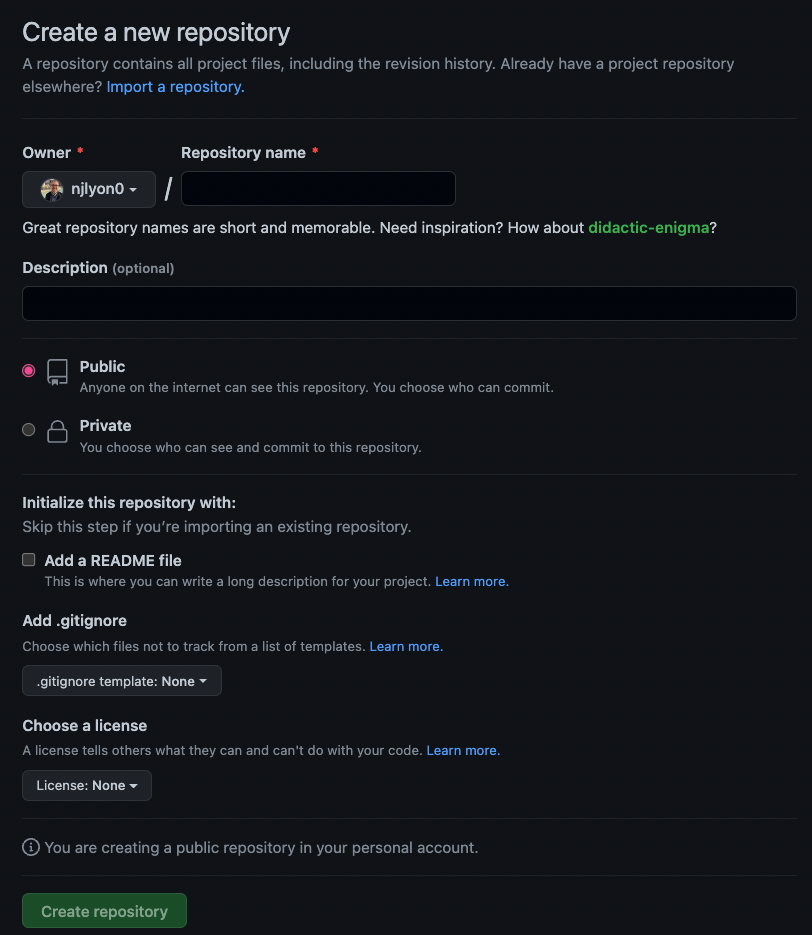
Yay! We’ve just created a new repository! Here is what the landing page should look like:
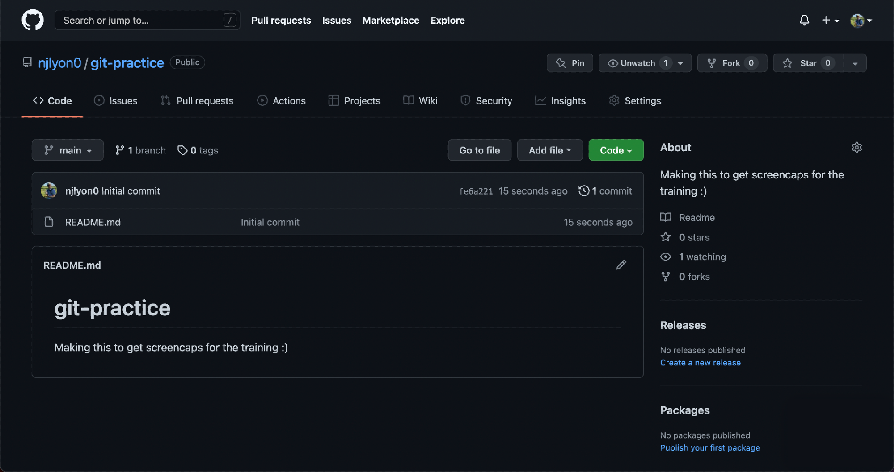
This repository is currently public, so it’s visible to anyone, but since we are working in groups, we will need to give access to your group members. Click on the Settings tab for your repository and go to Collaborators.
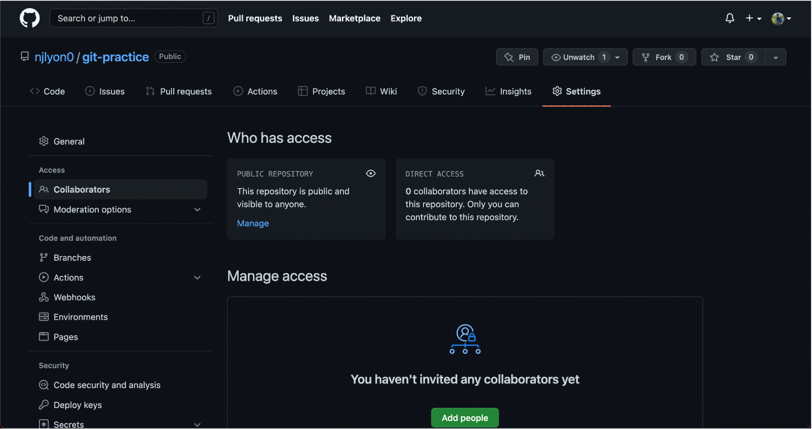
Click on Add people. Now let’s get the usernames of all of your group members and add them as collaborators to your repository.
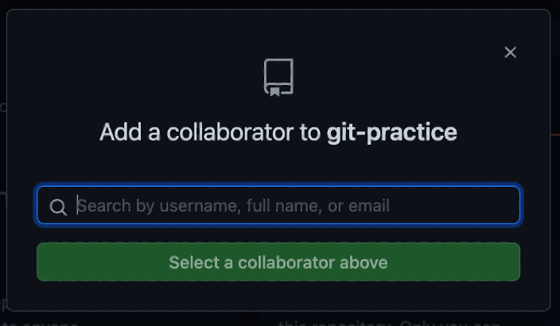
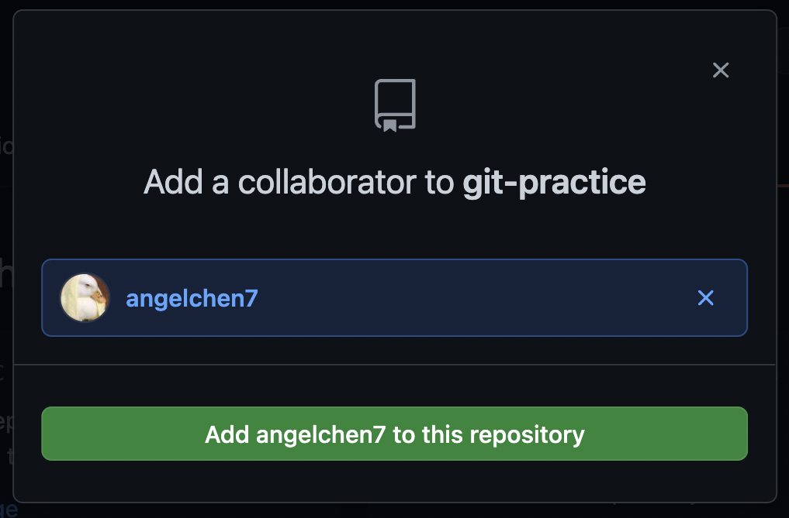
Great! Now everyone in the group should have access to the repository.
Create a Repository on GitHub
Now that we’ve walked through how to create a repository on GitHub let’s try to make our own! Click over to GitHub and create your own repository (with a README.md). We’ll split into breakout groups to try this out and please let us know if any questions come up.